Criando esquemas de metadados — Um guia para data stewards
O Contour permite projetar esquemas de metadados personalizados de forma visual — arrastando ou clicando em widgets de formulário sobre uma tela — e os exporta como formas SHACL compatíveis com os padrões, com anotações de formulário DASH. A saída encaixa diretamente em um FAIR Data Point ou em qualquer plataforma que entenda SHACL.
Slogan do Contour: Visual schemas. Clean SHACL.
Este guia é destinado a data stewards que querem definir quais metadados sua comunidade deve (ou pode) fornecer para um determinado tipo de recurso — um conjunto de dados, um estudo, uma amostra, um pacote de software — sem escrever Turtle à mão.
Sem instalação, sem servidor. O editor é uma única página web autocontida. Abra no Chrome ou Edge (recomendado, para salvar arquivos diretamente) — Firefox e Safari também funcionam, com salvamento estilo download.
Sumário
- O que você está criando (conceitos-chave)
- A interface em resumo
- Tutorial: criar um esquema Dataset do zero
- Passo 1 — Definir a identidade do esquema
- Passo 2 — Gerenciar vocabulários (prefixos)
- Passo 3 — Organizar o formulário em grupos
- Passo 4 — Adicionar sua primeira propriedade (um campo de texto)
- Passo 5 — Definir cardinalidade e restrições de validação
- Passo 6 — Adicionar uma descrição de várias linhas
- Passo 7 — Adicionar uma propriedade de data
- Passo 8 — Adicionar um vocabulário controlado (enumeração)
- Passo 9 — Referenciar outra entidade (IRI + classe)
- Passo 10 — Modelar um subobjeto com uma forma aninhada
- Passo 11 — Pré-visualizar o formulário de entrada de dados
- Passo 12 — Revisar o SHACL gerado
- Passo 13 — Salvar e exportar
- Trabalhando diretamente com o código (a aba Código SHACL)
- Verificando seu trabalho (o painel de Problemas)
- Recursos avançados (modelagem avançada)
- Referência
- Receitas — padrões comuns de modelagem
- Dicas e solução de problemas
O que você está criando (conceitos-chave)
Um esquema de metadados nesta ferramenta é uma NodeShape SHACL: a descrição de como é um registro válido de um determinado tipo. Alguns termos que você encontrará ao longo do guia:
| Termo | O que significa para você |
|---|---|
| NodeShape | O próprio esquema — ex.: "o que um registro de Dataset deve conter". |
Classe alvo (sh:targetClass) |
O tipo RDF ao qual o esquema se aplica, ex.: dcat:Dataset. Registros desse tipo são validados contra seu esquema. |
Propriedade (sh:property) |
Um único campo — título, publicador, data de emissão, … Cada propriedade tem um caminho, um widget e restrições. |
Caminho da propriedade (sh:path) |
O predicado RDF no qual o campo escreve, ex.: dct:title. É o termo realmente armazenado nos metadados. |
Widget (dash:editor) |
O controle de formulário exibido a quem preenche os metadados — uma caixa de texto, um seletor de data, uma lista suspensa, etc. |
Grupo (sh:PropertyGroup) |
Uma seção visual que agrupa campos relacionados, ex.: "Informações gerais". |
Prefixo (@prefix) |
Um apelido curto para um namespace de vocabulário, ex.: dct: → http://purl.org/dc/terms/. |
Você projeta tudo isso visualmente; a ferramenta escreve o SHACL para você.
A interface em resumo
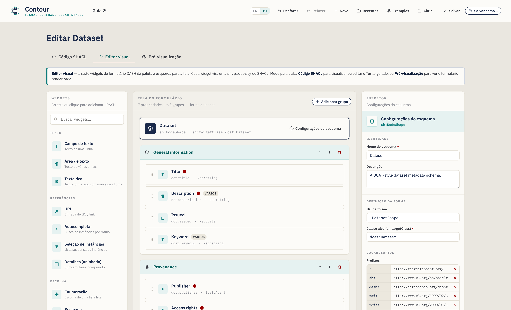
A janela tem três abas:
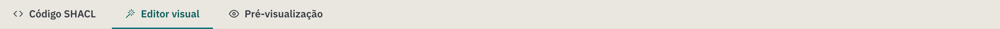
- Código SHACL — o esquema serializado. Turtle por padrão, com autocompletar; as edições são sincronizadas de volta à tela visual. Um seletor de Sintaxe também oferece N-Triples, TriG, Notation3 e uma exportação em JSON-LD. É também onde os arquivos que você abre são exibidos.
- Editor visual — a bancada de arrastar e soltar (mostrada acima). É onde acontece a maior parte do trabalho.
- Pré-visualização — uma renderização realista do formulário de entrada de dados que seu esquema produz, para você testar a experiência antes de publicar.
O Editor visual é dividido em três colunas:
| Coluna | Função |
|---|---|
| Widgets (esquerda) | A paleta de controles de formulário. Arraste um para a tela, ou apenas clique nele (teclado: foco + Enter) para adicioná-lo. |
| Tela do formulário (centro) | Seu esquema: o banner do alvo, grupos, propriedades e formas aninhadas. |
| Inspetor (direita) | Configurações do que estiver selecionado — o esquema, um grupo ou uma propriedade. |
Abaixo da bancada há uma barra de ações com um contador de propriedades/grupos, um indicador de Problemas (uma verificação ao vivo do seu esquema — veja a §5) e botões de Salvar / Copiar. Para ver o esquema serializado, mude para a aba Código SHACL; para ver o formulário renderizado, mude para Pré-visualização.
O cabeçalho concentra as ações de arquivo — Desfazer / Refazer, Novo, Recentes, Exemplos, Abrir, Salvar, Salvar como — além do seletor de idioma e de um link para o Guia:
Seu trabalho é salvo conforme você avança. O Contour mantém um rascunho salvo automaticamente no seu navegador, então recarregar a página ou fechar a aba por acidente não o perde — ao voltar você verá um aviso "Seu rascunho não salvo foi restaurado". Desfazer/Refazer (ou Ctrl/Cmd+Z e Ctrl/Cmd+Shift+Z) percorrem suas edições, e o menu Recentes reabre esquemas que você salvou.
Idioma da interface
A interface do Contour está disponível em Inglês (padrão) e Português do Brasil. Alterne com o botão EN / PT no cabeçalho (visível na imagem da barra de ferramentas acima) — sua escolha é lembrada entre sessões. Apenas a interface é traduzida; o conteúdo do seu esquema (nomes, descrições, caminhos de propriedade) e o SHACL gerado nunca são alterados, portanto o Turtle exportado é idêntico em qualquer idioma.
Tutorial: criar um esquema Dataset do zero
Vamos criar um esquema de metadados de Dataset no estilo DCAT. Cada passo apresenta um recurso da ferramenta e, ao final, você terá usado todas as principais funcionalidades.
O Contour começa em branco para você criar seu próprio esquema do zero — o título da página exibe Novo esquema de metadados até você nomeá-lo. Se preferir explorar um esquema pronto, o menu Exemplos no cabeçalho carrega modelos prontos (Dataset, Agente, Conceito); o exemplo Dataset corresponde ao que construímos abaixo:
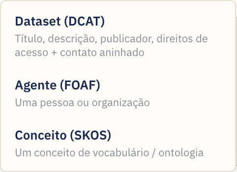
Ao longo do tutorial, use a aba Editor visual para trabalhar. Para começar um esquema novo a qualquer momento, use o botão Novo.
Passo 1 — Definir a identidade do esquema
Clique no banner do esquema no topo da tela (ele exibe Esquema sem título até você nomeá-lo), ou no botão Configurações do esquema. O Inspetor passa a mostrar as configurações no nível do esquema:
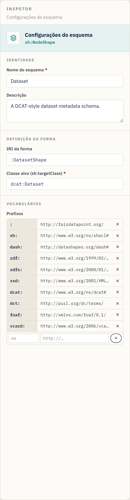
Preencha:
- Nome do esquema — um rótulo legível, ex.:
Dataset. (Uma vez definido, o título da página muda de Novo esquema de metadados para Editar Dataset; nomeie-o para qualquer domínio — uma classe de ontologia, um catálogo — e o título acompanha.) - Descrição — uma frase descrevendo a finalidade do esquema.
- IRI da forma — o identificador da forma, ex.:
:DatasetShape. O:inicial usa seu namespace padrão; você pode manter o valor sugerido. - Classe alvo (
sh:targetClass) — a classe RDF que este esquema valida, ex.:dcat:Dataset. Isso é obrigatório para o esquema ser útil — é o que diz à plataforma "aplique estas regras aos registros de Dataset".
Passo 2 — Gerenciar vocabulários (prefixos)
Ainda nas configurações do esquema, role até Vocabulários. Prefixos permitem
escrever termos curtos como dct:title em vez de URLs completas.
O editor já vem com os mais comuns declarados — sh, dash, rdf, rdfs,
xsd, dcat, dct, foaf e o prefixo vazio padrão :. Para adicionar o seu
(por exemplo, um vocabulário de domínio):
- Na linha vazia ao final da tabela de prefixos, digite o apelido (ex.:
vcard) na primeira caixa. - Digite a URL do namespace (ex.:
http://www.w3.org/2006/vcard/ns#) na segunda caixa. - Pressione Enter ou clique no botão +.
Remova um prefixo com o × ao lado dele. Todo prefixo usado em um caminho de propriedade ou classe deve ser declarado aqui para que o Turtle exportado seja válido.
Passo 3 — Organizar o formulário em grupos
Grupos (sh:PropertyGroup) são as seções do seu formulário. Em uma tela em
branco, basta arrastar seu primeiro widget para a tela e o Contour cria o
primeiro grupo para você — ou clique em Adicionar grupo (canto superior
direito da tela) para criar uma seção vazia para soltar widgets:
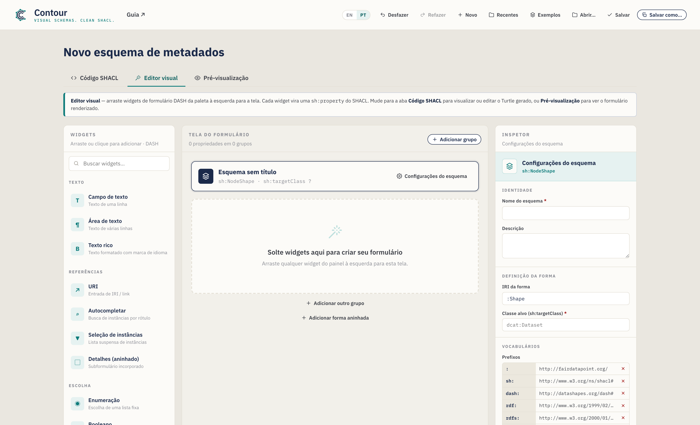
- Renomeie um grupo clicando em seu título e digitando — ex.:
Informações gerais. - Reordene com os botões ↑ / ↓ no cabeçalho do grupo (isso renumera os grupos para você).
- Exclua com o ícone de lixeira no cabeçalho do grupo.
Para este tutorial, crie dois grupos: General information e Provenance.
Os rótulos de exemplo (nomes de grupos e campos) aparecem em inglês, como no esquema de exemplo carregado e nas capturas de tela; ao criar o seu, você pode nomeá-los no idioma que preferir.
Passo 4 — Adicionar sua primeira propriedade (um campo de texto)
Na paleta de Widgets à esquerda, adicione um Campo de texto ao grupo General information — arraste-o para o grupo ou simplesmente clique nele (ele é adicionado ao grupo selecionado, ou ao último). Quem usa teclado pode focar um widget e pressionar Enter. Os widgets são organizados por categoria (Texto, Referências, Escolha, Data e número) e pesquisáveis pela caixa no topo.
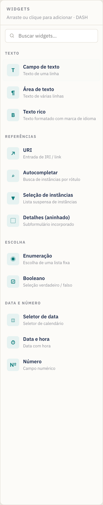
Ao adicionar um widget, ele vira um cartão de propriedade na tela e é selecionado automaticamente. Um cartão de propriedade mostra seu rótulo, caminho, tipo e selos de status (um ponto vermelho para obrigatório, um selo "vários" para repetível):
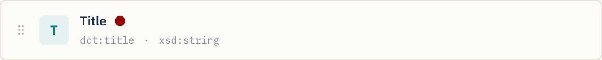
Cada cartão tem alças para reordenar arrastando (a alça à esquerda), duplicar e excluir (os ícones à direita, ao passar o mouse).
Com o novo campo selecionado, o Inspetor mostra suas Configurações da propriedade. Defina:
- Rótulo (
sh:name) →Title— o rótulo do campo exibido aos usuários. - Descrição → texto de ajuda opcional (aparece como dica ⓘ no formulário).
- Caminho da propriedade (
sh:path) →dct:title— o termo RDF em que este campo escreve. Sempre defina-o; o caminho de placeholder padrão não é significativo. Conforme você digita, o Contour sugere predicados comuns (e os prefixos que você declarou); escolha um ou continue digitando o seu.
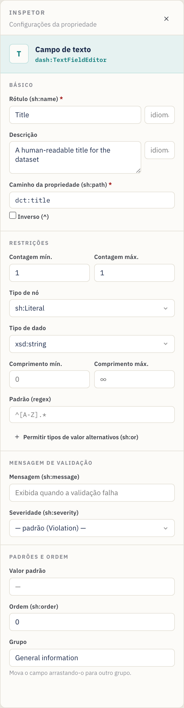
Passo 5 — Definir cardinalidade e restrições de validação
A seção Restrições do Inspetor controla a validação. Para Title:
- Contagem mín. =
1, Contagem máx. =1→ exatamente um título é obrigatório. (Contagem mín. ≥ 1 torna o campo obrigatório — note o ponto vermelho no cartão e o asterisco vermelho na pré-visualização.) - Tipo de nó =
sh:Literal(um valor simples, não um link). - Tipo de dado =
xsd:string. - Opcionalmente Comprimento mín./máx. e um Padrão (uma expressão regular,
ex.:
^[A-Z].*para exigir uma letra maiúscula inicial).
Resumo de cardinalidade: Mín 1 / Máx 1 = obrigatório, valor único. Mín 0 / Máx 1 = opcional, valor único. Mín 1 / Máx ∞ (deixe Máx vazio) = obrigatório, repetível. Mín 0 / Máx ∞ = opcional, repetível.
Faixa de valores (números e datas). Campos de Número, Seletor de data e Data
e hora mostram uma seção Faixa de valores — defina Mín (≥) / Máx (≤)
(inclusivos) ou os limites exclusivos (>) / (<). Números são escritos
diretamente (sh:minInclusive 1900), datas como literais tipados
("2020-01-01"^^xsd:date).
Mensagem de validação personalizada (opcional). A seção Mensagem de
validação permite definir o texto que uma plataforma exibe quando este campo
falha (sh:message) e sua Severidade — Violation (padrão), Warning ou
Info (sh:severity).
Passo 6 — Adicionar uma descrição de várias linhas
Arraste uma Área de texto para General information. Defina:
- Rótulo →
Description, Caminho →dct:description. - Contagem mín. =
1, deixe Contagem máx. vazia (∞) para que várias variantes de idioma possam ser fornecidas. O cartão agora mostra um selo vários, e a pré-visualização ganha um botão + Adicionar.
Passo 7 — Adicionar uma propriedade de data
Arraste um Seletor de data para General information. Defina:
- Rótulo →
Issued, Caminho →dct:issued. - Contagem mín. =
0, Contagem máx. =1(opcional, único). - O tipo de dado assume
xsd:date, correto para uma data de calendário. (Use Data e hora se precisar de um carimbo de data/hora —xsd:dateTime.)
Passo 8 — Adicionar um vocabulário controlado (enumeração)
Mude para o grupo Provenance e arraste um widget de Enumeração. Ele cria
uma lista suspensa restrita a um conjunto fixo de valores (sh:in).
No Inspetor, surge um editor de Valores permitidos:
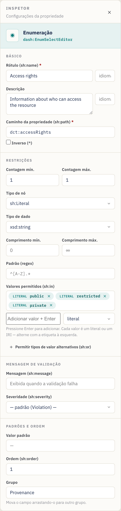
- Rótulo →
Access rights, Caminho →dct:accessRights. - Em Valores permitidos, digite cada opção e pressione Enter:
public,restricted,private. Remova uma com seu ×. - Contagem mín./máx.
1/1para exigir exatamente uma escolha.
Os valores são exportados como sh:in ( "public" "restricted" "private" ).
Valores literais vs. IRI. Cada valor permitido carrega uma alternância literal / IRI (a pequena etiqueta à sua esquerda). Mantenha literal para texto simples como
public; mude para IRI quando as escolhas forem termos de vocabulário controlado (ex.:ex:Public, umskos:Concept) para que sejam exportados como IRIs, não como strings.
Passo 9 — Referenciar outra entidade (IRI + classe)
Algumas propriedades apontam para outro recurso em vez de conter um valor simples — por exemplo, o publicador do conjunto de dados é uma organização, não uma string. Arraste um widget Autocompletar para Provenance. Ele renderiza uma caixa de busca que procura instâncias existentes.
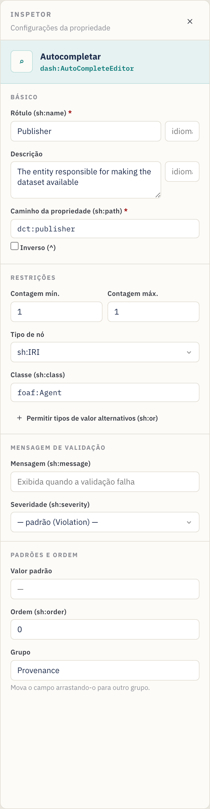
- Rótulo →
Publisher, Caminho →dct:publisher. - Tipo de nó =
sh:IRI(o valor é um link/identificador). - Classe (
sh:class) →foaf:Agent— restringe o seletor a instâncias dessa classe. (A caixa Classe só aparece quando o tipo de nó é baseado em IRI.) A caixa Classe sugere classes comuns conforme você digita. - Contagem mín./máx.
1/1.
Outros widgets de referência: URI (link livre), Seleção de instâncias (lista suspensa de instâncias). Use o que melhor se adequar a como o valor é escolhido.
Avançado: uma propriedade também pode aceitar um literal ou um IRI (e regras semelhantes de "um destes tipos") via Tipos de valor alternativos (
sh:or), ou seguir uma relação ao contrário com um caminho Inverso (^) — veja §6 Recursos avançados.
Passo 10 — Modelar um subobjeto com uma forma aninhada
Às vezes um campo é, ele próprio, um pequeno objeto estruturado. Um ponto de contato, por exemplo, tem seu próprio nome e e-mail. Modele isso com uma forma aninhada e o widget Detalhes (aninhado).
- No final da tela, clique em Adicionar forma aninhada. Uma nova forma
aparece sob o divisor Formas aninhadas e é selecionada. No Inspetor, defina
sua IRI da forma (ex.:
:ContactShape) e, opcionalmente, uma Classe alvo (ex.:vcard:Kind). Renomear a IRI atualiza automaticamente toda propriedade que a referencia. - Adicione widgets à forma aninhada como em um grupo — ex.: um Campo de
texto
Full name(vcard:fn) e uma URIEmail(vcard:hasEmail). - De volta a um grupo, adicione um widget Detalhes (aninhado). No seu
Inspetor, defina Forma aninhada (
sh:node) como:ContactShape(a caixa oferece suas formas aninhadas como sugestões).
Atalho. Em uma propriedade Detalhes você pode clicar em Criar e vincular forma aninhada para criar uma nova forma e ligar o
sh:nodea ela em um único passo — depois é só adicionar os campos dela. O cartão da propriedade mostra o vínculo para o qual aponta (ex.:→ :ContactShape), e o painel de Problemas sinaliza uma propriedade Detalhes cujo alvo está ausente.
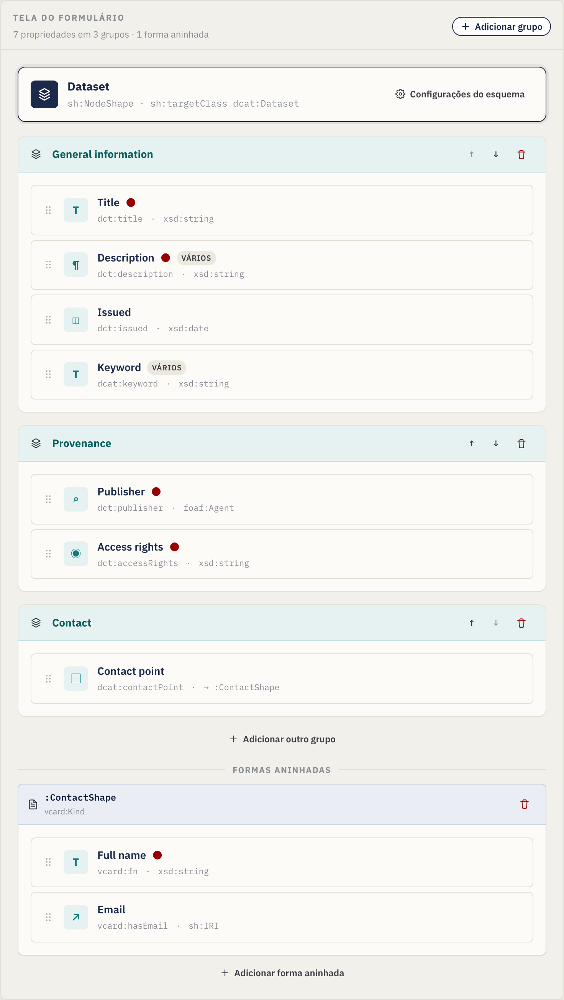
O Inspetor da propriedade Detalhes a vincula à forma aninhada via sh:node:
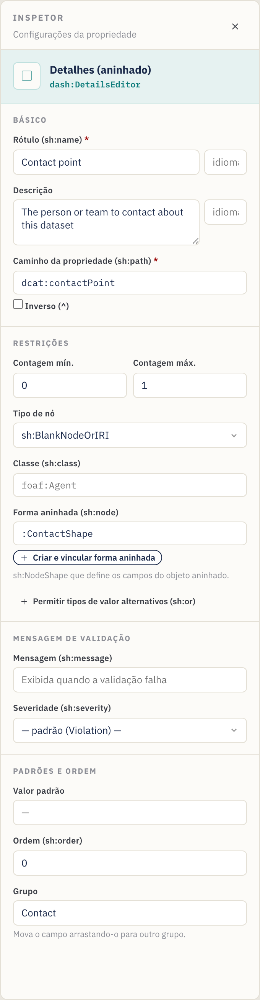
O cartão da forma aninhada na tela contém suas próprias propriedades:

Passo 11 — Pré-visualizar o formulário de entrada de dados
A qualquer momento, abra a aba Pré-visualização para conferir o que verá quem
inserir os metadados. A pré-visualização reflete suas restrições: campos
obrigatórios mostram um asterisco vermelho, um pequeno selo de cardinalidade
indica a quantidade permitida (ex.: 1–3), descrições viram dicas ⓘ, campos
repetíveis ganham botões + Adicionar, padrões / comprimentos / faixas são
aplicados às entradas, textos com marca de idioma ganham uma pequena caixa de
idioma, qualquer mensagem de validação aparece sob o campo, e propriedades
Detalhes renderizam os campos de sua forma aninhada inline — aninhando em
qualquer profundidade:
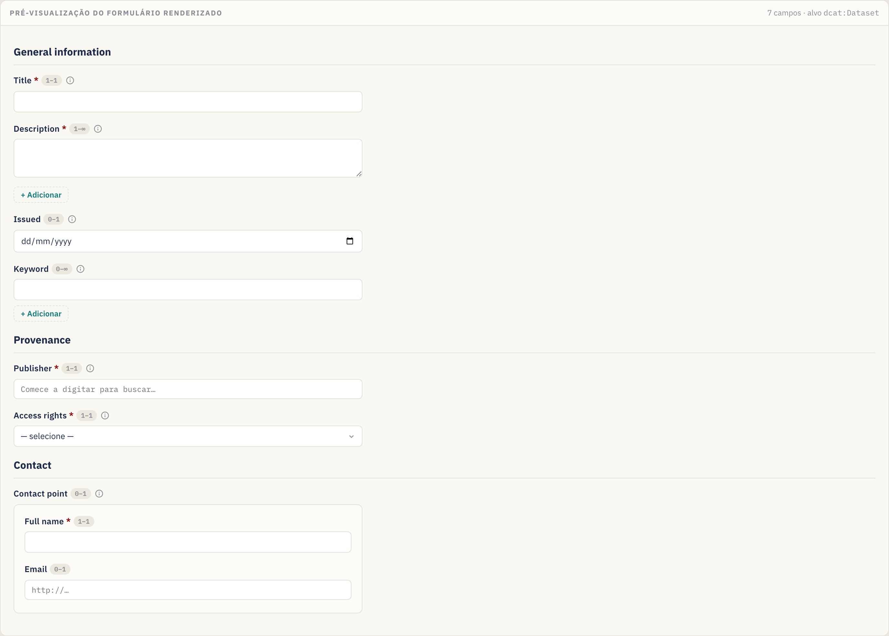
Esta pré-visualização é somente leitura — serve para validar o design, não para capturar dados reais.
Passo 12 — Revisar o SHACL gerado
A aba Código SHACL mostra o Turtle gerado a partir do seu design (e permite editá-lo diretamente):
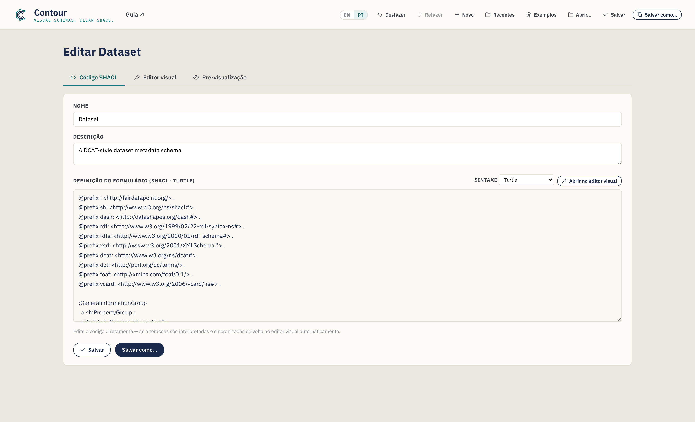
Tudo o que você configurou visualmente está aqui — declarações @prefix, os
PropertyGroup, a NodeShape com seus blocos sh:property e quaisquer formas
aninhadas. O botão Copiar SHACL na barra de ações do Editor visual coloca a
serialização na sua área de transferência. Use o seletor de Sintaxe para
visualizar ou exportar outros formatos, incluindo JSON-LD (veja
§4).
Passo 13 — Salvar e exportar
Salve seu esquema (um arquivo .ttl por padrão):
- Salvar como… — escolha um novo nome e local de arquivo. A extensão segue a
sintaxe selecionada (
.ttl,.nt,.trig,.n3ou.jsonld). - Salvar — grava no arquivo que você abriu/salvou por último (Ctrl/Cmd+S). O botão exibe brevemente Salvo! para confirmar.
- Copiar SHACL — copia a serialização atual sem salvar um arquivo.
- Recentes (cabeçalho) — reabre um esquema que você salvou antes nesta sessão.
No Chrome/Edge o arquivo é gravado diretamente no disco. No Firefox/Safari o editor recorre a um download normal. O nome de arquivo sugerido é derivado do nome do esquema (ex.:
dataset.ttl). De todo modo, um rascunho salvo automaticamente é mantido no seu navegador entre sessões.
Envie o .ttl resultante ao seu FAIR Data Point (ou outra plataforma SHACL) como
um esquema de metadados, e registros da classe alvo serão validados — e
formulários renderizados — conforme seu design.
Trabalhando diretamente com o código (a aba Código SHACL)
Prefere escrever ou colar SHACL à mão, ou precisa partir de uma forma existente? Use a aba Código SHACL.
- Sincronização bidirecional. As edições no Turtle são interpretadas e enviadas de volta ao Editor visual automaticamente (após você pausar a digitação). Reciprocamente, tudo o que você construir visualmente aparece aqui.
- Autocompletar sensível ao contexto (Turtle). Conforme você digita, o editor
sugere predicados SHACL, tipos de nó, tipos de dado XSD, editores DASH, grupos
de propriedade declarados e linhas
@prefix. Use ↑/↓ para mover, Tab/Enter para aceitar, Esc para dispensar.
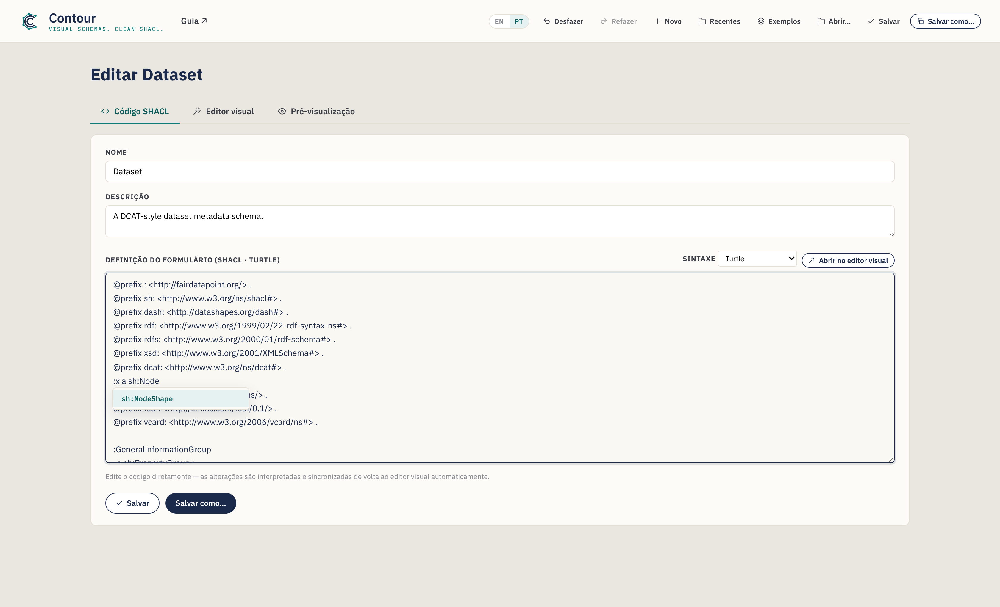
- Abrir um arquivo existente. Abrir… no cabeçalho carrega um arquivo
.ttl/.nt/.trig/.n3nesta aba, detecta sua sintaxe e o interpreta no Editor visual — um jeito rápido de adaptar um esquema existente. Se um arquivo não puder ser interpretado, uma mensagem inline aponta a linha problemática; você ainda pode editar o texto bruto. - Nome e Descrição do esquema também têm campos simples no topo desta aba.
Clique em Abrir no editor visual para voltar à visão de arrastar e soltar.
Escolhendo uma sintaxe (e exportando JSON-LD)
Um seletor de Sintaxe nesta aba alterna a serialização entre Turtle
(padrão), N-Triples, TriG, Notation3 e JSON-LD (exportação). As
quatro primeiras são totalmente editáveis — as edições sincronizam de volta. O
JSON-LD é somente exportação (não há interpretador de JSON-LD): o editor o
mostra somente leitura para você Copiar ou Salvar como um arquivo
.jsonld e depois voltar ao Turtle para continuar editando.
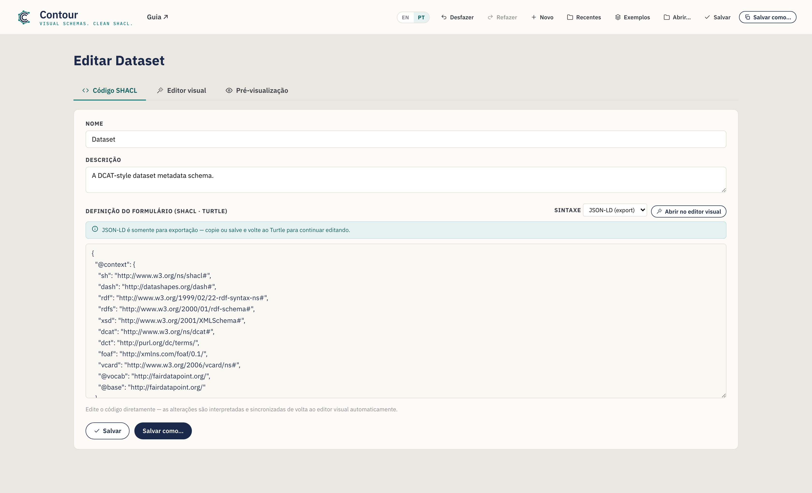
Esquemas novos sempre começam em Turtle, e Salvar como usa a extensão correspondente à sintaxe selecionada.
Editar um esquema existente é sem perdas
O Contour interpreta os arquivos com um motor RDF de verdade, então abrir, editar
e salvar um esquema nunca descarta silenciosamente as partes que ele não modela
visualmente. Construções que o editor não tem um controle para — digamos
sh:and, formas de valor qualificadas ou anotações extras — são preservadas
integralmente e reemitidas em um bloco "Preserved" claramente comentado ao
final da saída. Quando um arquivo carregado contém tais construções você verá um
breve aviso nesta aba; suas edições nas partes que o Contour de fato modela são
aplicadas normalmente, e o restante é mantido intacto.
Verificando seu trabalho (o painel de Problemas)
Enquanto você constrói, o Contour verifica o esquema continuamente e resume os problemas no indicador de Problemas na barra de ações do Editor visual. Clique nele para expandir a lista; clique em qualquer item para ir direto ao elemento problemático.

Ele sinaliza coisas como:
- uma propriedade sem caminho, ou caminhos duplicados no mesmo grupo;
- uma propriedade Detalhes cuja forma aninhada está ausente;
- um caminho, classe, tipo de dado ou classe alvo usando um prefixo que você não declarou;
- uma classe alvo ou nome de esquema ausente;
- formas aninhadas com IRI ausente ou duplicada.
Os problemas são não bloqueantes — são orientação, não barreiras — mas resolvê-los garante que o SHACL exportado seja bem formado e referencie apenas vocabulários declarados.
Recursos avançados (modelagem avançada)
Além dos widgets e restrições principais, o Inspetor expõe alguns controles avançados para esquemas mais ricos. Cada um é opcional — use-os quando seu modelo precisar.
Rótulos em vários idiomas
sh:name e sh:description podem carregar uma marca de idioma, e você pode
adicionar traduções para que um campo seja rotulado em vários idiomas. Na
seção Básico, digite uma marca (ex.: en) na caixinha ao lado do rótulo; um
editor de traduções então permite adicionar mais (pt → "Título", …). Cada
uma vira sua própria declaração com marca de idioma (sh:name "Title"@en, "Título"@pt), e a pré-visualização mostra uma caixa de idioma no campo.
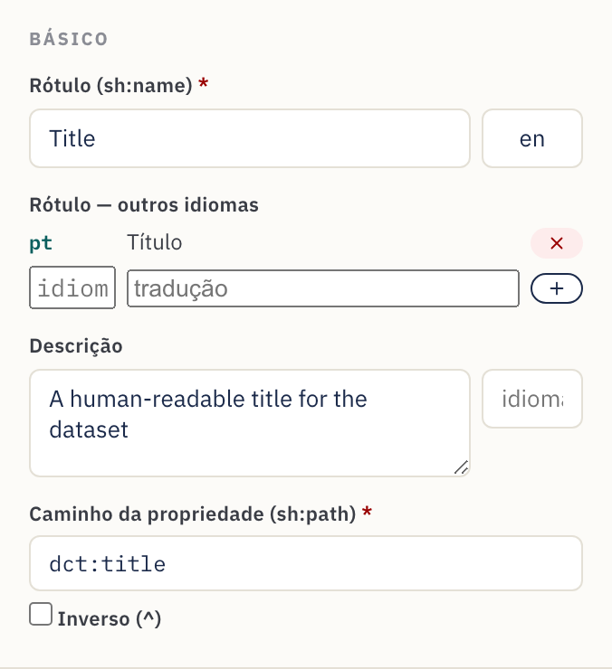
Faixas numéricas e de data
Campos de Número, Seletor de data e Data e hora mostram um bloco Faixa de
valores em Restrições. Defina Mín (≥) / Máx (≤) inclusivos ou os
limites exclusivos (>) / (<) — ex.: um ano de publicação ≥ 1900. Números
são exportados diretamente (sh:minInclusive 1900); datas como literais tipados
("2000-01-01"^^xsd:date).
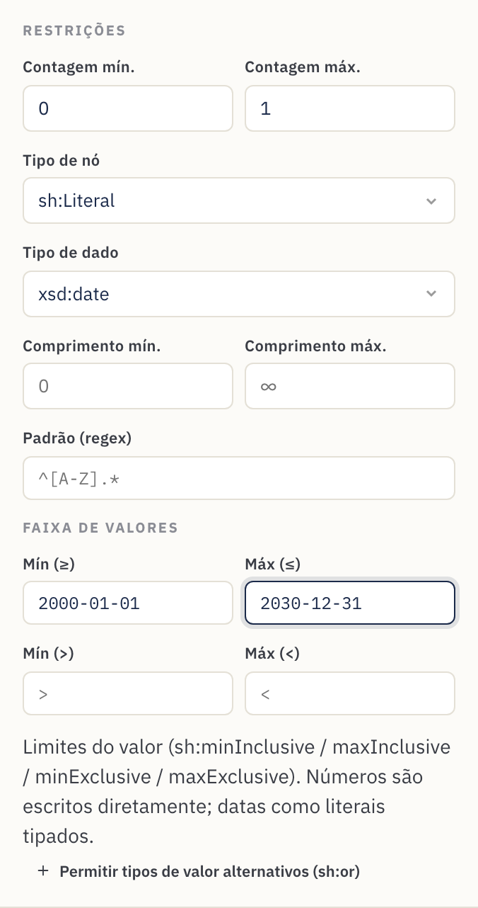
Mensagens de validação personalizadas
A seção Mensagem de validação define o texto que uma plataforma exibe quando
um valor falha na regra (sh:message) e sua Severidade — Violation
(padrão), Warning ou Info (sh:severity). Use-a para transformar uma falha
seca em orientação amigável ao steward.
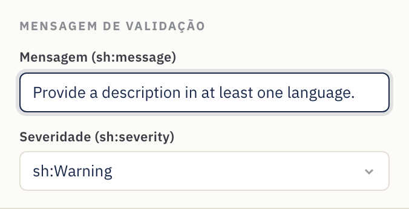
Tipos de valor alternativos (literal ou IRI)
Algumas propriedades legitimamente aceitam mais de um tipo de valor — um assunto
que pode ser texto livre ou um IRI de vocabulário controlado, por exemplo.
Clique em Permitir tipos de valor alternativos (sh:or) e liste as
alternativas (cada uma um tipo de nó, tipo de dado ou classe). Isso é exportado
como sh:or ( [ … ] [ … ] ). Formas lógicas mais ricas que o Contour não modela
ainda são preservadas no round-trip (veja
§4).
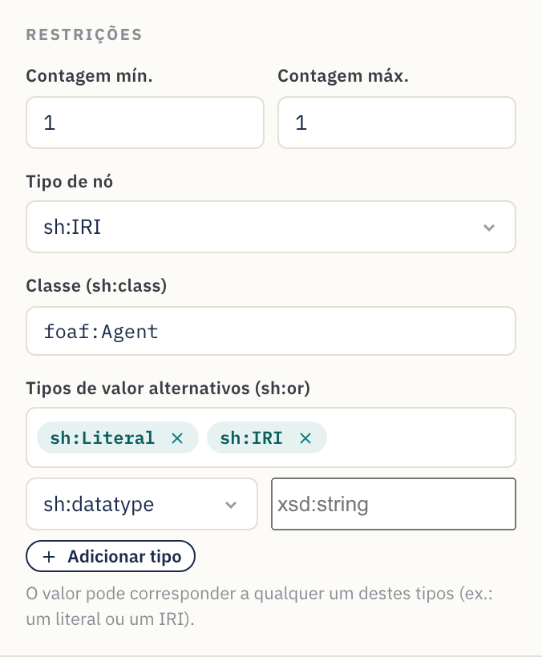
Caminhos inversos
Marque Inverso (^) ao lado do caminho da propriedade para combinar uma
relação ao contrário — "recursos que apontam para este" em vez do contrário.
Isso é exportado como sh:path [ sh:inversePath … ], e o cartão da propriedade
mostra o caminho com um ^ à frente.
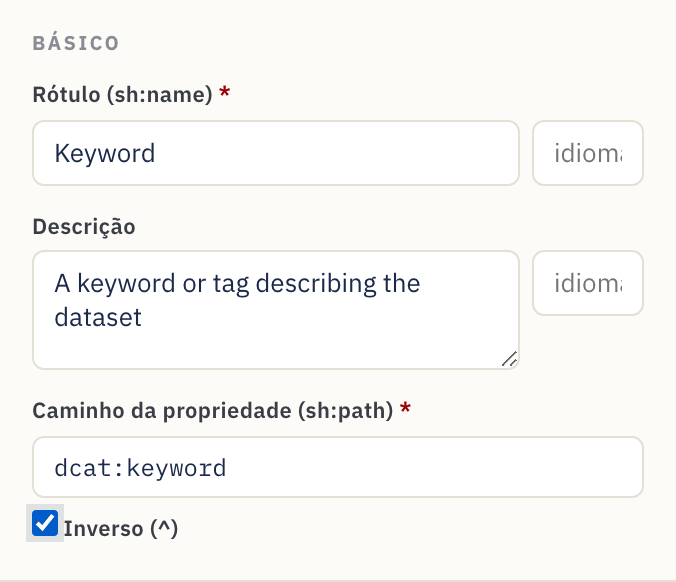
Referência
Catálogo de widgets
Cada widget mapeia para um editor DASH e tipos de nó / dado padrão sensatos.
| Widget | Editor DASH | Uso típico | Padrões |
|---|---|---|---|
| Campo de texto | dash:TextFieldEditor |
Texto de uma linha | sh:Literal, xsd:string |
| Área de texto | dash:TextAreaEditor |
Texto de várias linhas | sh:Literal, xsd:string |
| Texto rico | dash:RichTextEditor |
Texto formatado com marca de idioma | sh:Literal, rdf:HTML |
| URI | dash:URIEditor |
Link / IRI livre | sh:IRI |
| Autocompletar | dash:AutoCompleteEditor |
Buscar uma instância por rótulo | sh:IRI, sh:class foaf:Agent |
| Seleção de instâncias | dash:InstancesSelectEditor |
Lista suspensa de instâncias | sh:IRI |
| Detalhes (aninhado) | dash:DetailsEditor |
Subformulário incorporado via uma forma aninhada | sh:BlankNodeOrIRI |
| Enumeração | dash:EnumSelectEditor |
Escolha de uma lista fixa sh:in |
sh:Literal, xsd:string |
| Booleano | dash:BooleanSelectEditor |
verdadeiro / falso | sh:Literal, xsd:boolean |
| Seletor de data | dash:DatePickerEditor |
Data de calendário | sh:Literal, xsd:date |
| Data e hora | dash:DateTimePickerEditor |
Carimbo de data/hora | sh:Literal, xsd:dateTime |
| Número | dash:NumberFieldEditor |
Valor numérico | sh:Literal, xsd:integer |
Os padrões são pontos de partida — sobrescreva o tipo de nó, o tipo de dado ou a classe no Inspetor sempre que seu modelo precisar de algo diferente.
Referência das configurações de propriedade
O que cada controle do Inspetor escreve no SHACL:
| Campo do Inspetor | Saída SHACL | Observações |
|---|---|---|
| Rótulo | sh:name |
O rótulo do formulário. Uma marca de idioma opcional + traduções adicionais emitem um sh:name por idioma. |
| Descrição | sh:description |
Texto de ajuda / dica ⓘ. Também aceita marca de idioma, com traduções. |
| Caminho da propriedade | sh:path |
Obrigatório. O predicado RDF. Inverso (^) emite [ sh:inversePath … ]. |
| Contagem mín. | sh:minCount |
≥ 1 torna o campo obrigatório. |
| Contagem máx. | sh:maxCount |
Vazio = ilimitado (repetível). |
| Tipo de nó | sh:nodeKind |
sh:Literal, sh:IRI, sh:BlankNode ou combinações. |
| Tipo de dado | sh:datatype |
Exibido para tipos de nó literais. |
| Classe | sh:class |
Exibido para tipos de nó IRI; restringe o tipo alvo. |
| Forma aninhada | sh:node |
Exibido para Detalhes; vincula a uma forma aninhada. |
| Comprimento mín. / máx. | sh:minLength / sh:maxLength |
Apenas literais. |
| Faixa de valores | sh:minInclusive / maxInclusive / minExclusive / maxExclusive |
Números e datas. |
| Padrão (regex) | sh:pattern |
Apenas literais. |
| Valores permitidos | sh:in ( … ) |
Escolhas de enumeração; cada valor literal ou IRI. |
| Tipos de valor alternativos | sh:or ( … ) |
"Aceitar um destes tipos" (ex.: literal ou IRI). |
| Mensagem / Severidade | sh:message / sh:severity |
Texto de validação personalizado + Violation / Warning / Info. |
| Valor padrão | sh:defaultValue |
Valor pré-preenchido. |
| Ordem | sh:order |
Ordem do campo dentro de seu grupo. |
Controles no nível do esquema e do grupo:
| Controle | Saída SHACL |
|---|---|
| Nome do esquema | rdfs:label na NodeShape |
| IRI da forma | o sujeito da NodeShape |
| Classe alvo | sh:targetClass |
| Prefixos | declarações @prefix |
| Rótulo do grupo | rdfs:label no sh:PropertyGroup |
| Ordem do grupo | sh:order no grupo; o sh:group do campo o vincula |
Receitas — padrões comuns de modelagem
Padrões curtos e autocontidos que você pode aplicar sobre o tutorial.
Tornar um campo obrigatório. Defina Contagem mín. como 1. O cartão
mostra um ponto vermelho e o formulário o marca com *.
Permitir vários valores. Deixe Contagem máx. vazia (∞). O cartão mostra um selo vários e o formulário ganha + Adicionar.
Restringir a uma lista fixa. Use o widget Enumeração e preencha Valores
permitidos. Exporta como sh:in.
Vincular a uma organização ou pessoa. Use Autocompletar (ou Seleção de
instâncias), tipo de nó sh:IRI e Classe = foaf:Agent (ou a classe que
escolher).
Capturar um subobjeto estruturado (endereço, ponto de contato, distribuição).
Crie uma forma aninhada, adicione seus campos e então aponte uma propriedade
Detalhes (aninhado) para ela via sh:node. Veja o
Passo 10.
Impor um formato. Para literais, defina um Padrão (regex) e/ou Comprimento mín./máx. — ex.: um padrão de ORCID, ou um comprimento máximo em um campo de código.
Limitar um número ou data. Em um campo de Número / Data, use a seção Faixa
de valores — ex.: Mín (≥) 1900 para um ano, ou Máx (≤) uma data limite.
Oferecer um rótulo em vários idiomas. Defina uma marca de idioma no
Rótulo (ex.: en) e adicione traduções (pt → "Título", …). Cada uma
vira um sh:name com marca de idioma, e a pré-visualização mostra uma caixa de
idioma.
Aceitar um literal ou um IRI (ou "um destes tipos"). Use Tipos de valor
alternativos (sh:or) na propriedade e liste as alternativas (ex.:
sh:nodeKind sh:Literal e sh:nodeKind sh:IRI). Comum no DCAT-AP para valores
que podem ser texto inline ou uma referência.
Seguir uma relação ao contrário. Marque Inverso (^) no caminho para
combinar "coisas que apontam para este recurso" (ex.: membros de uma coleção) —
exportado como [ sh:inversePath … ].
Explicar uma regra de validação. Preencha a Mensagem de validação com texto amigável ao steward e escolha uma Severidade para que uma plataforma possa exibir um Warning útil em vez de uma falha seca.
Exportar para JSON-LD. Na aba Código SHACL, defina Sintaxe → JSON-LD
(exportação) e Copie ou Salve como .jsonld para ferramentas que
consomem JSON-LD.
Começar de um exemplo. Use o menu Exemplos para carregar um modelo Dataset (DCAT), Agente (FOAF) ou Conceito (SKOS) e adapte-o às suas necessidades.
Reaproveitar um esquema existente. Abra… o arquivo existente, adapte-o no Editor visual e então Salve como… um novo arquivo — tudo o que o Contour não modela é preservado (veja §4).
Dicas e solução de problemas
- Sempre defina o caminho da propriedade. Widgets novos recebem um caminho de
placeholder como
:textfield; substitua-o pelo termo RDF real (dct:title,dcat:theme, …) ou os metadados exportados não usarão o termo que você pretende. - Declare os prefixos que você usa. Se um caminho ou classe usa um apelido
(ex.:
vcard:), adicione-o em Vocabulários para que o Turtle seja válido. - Um campo foi para o grupo errado. Arraste o cartão da propriedade para o grupo correto; a caixa Grupo no Inspetor é somente leitura e reflete a mudança.
- As edições no Código SHACL não sincronizaram. A sincronização acontece logo após você parar de digitar. Se um erro de interpretação for exibido (com número de linha), corrija o Turtle — a tela visual mantém o último estado válido até o texto ser interpretado.
- O botão Salvar só baixa. É o comportamento esperado no Firefox/Safari. Para salvamentos no local, use um navegador baseado em Chromium (Chrome/Edge).
- Cometeu um erro? Desfazer (Ctrl/Cmd+Z) / Refazer (Ctrl/Cmd+Shift+Z) cobrem cada edição, e seu trabalho é salvo automaticamente — recarregar a página o restaura.
- Confira o painel de Problemas. Antes de exportar, expanda Problemas na
barra de ações e resolva quaisquer erros (caminhos vazios, prefixos não
declarados,
sh:nodequebrado). - Editando JSON-LD? Não dá — é somente exportação. Mude a Sintaxe de volta para Turtle (ou N-Triples / TriG / N3) para continuar editando.
- Recomeçar. Use o botão Novo para um esquema em branco, carregue um de Exemplos ou Abra… um arquivo existente.
Criado com o Contour para o ecossistema FAIR Data Point. A saída é SHACL + DASH padrão e funciona com qualquer ferramenta que entenda SHACL.